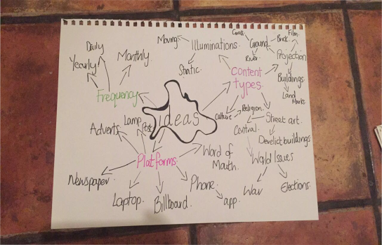
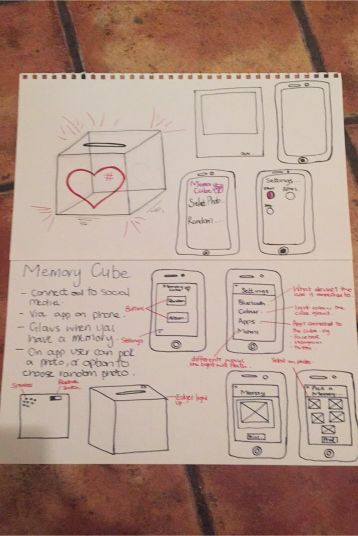
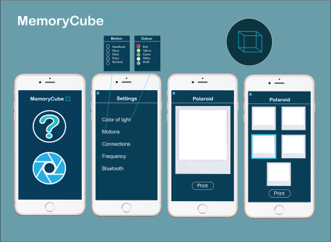

Memory Cube
Breif
This was on of the micro publication master class that we were given to do in university. It was a short four day project, where by we were asked to explore the topic of contect, and how the public viewed and took it in. We were asked to create an interactive way for the public to comsume content.
Approach
The master class started with the class being put into groups, and being asked to brain storm different topics and ideas. Then we were asked to narrow it down to three different concepts, then finally one and this was the one that we had to present to the class. Then we were given three days to go off and generate our own personal idea from the brainstorming that we had done that day.
Outcome
My finished outcome was that I design a 'memory cube' that was connected to an app and social media account, where by you could not only view but also print off special memories.
